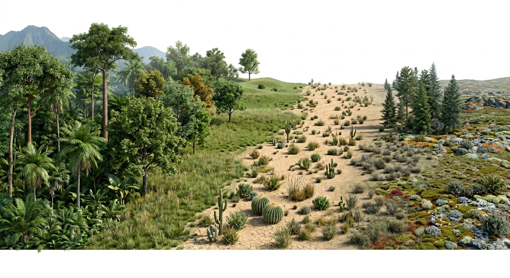
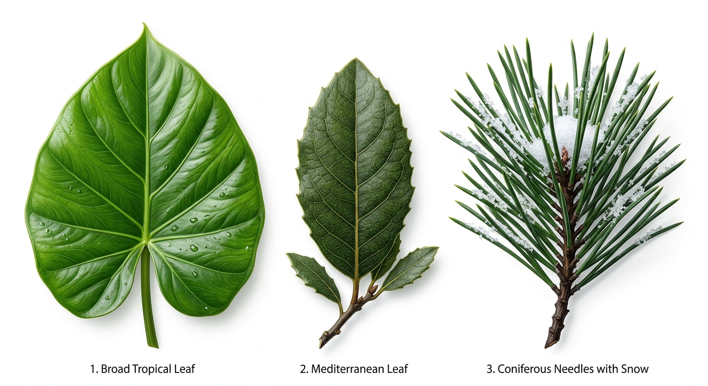
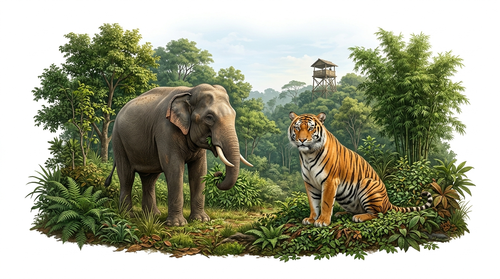

In the beginning, Earth was a barren planet. Gradually, life appeared in the ocean in the form of plants, followed by various other organisms on land. The distribution of this vegetation is highly dependent on climate.
Concept
Natural Vegetation: The assemblage of plant species in an environment that grows without human interference. It includes forests, grasses, and shrubs.

Figure 1: Global Vegetation Gradient
Fact
Temperature and rainfall are the two most important factors for the growth of plants:
Heavy Rainfall: Thick and dense forests.
Low Rainfall/Deserts: Shrubs and short trees (size and concentration reduce).
Cold Regions: Short growing season; plants occur in scattered patches like mosses and lichens.
2. Classification of Forests
On the basis of location and climatic conditions, forests are divided into three broad types:
A. Tropical Hardwood Forests
These are further sub-divided based on temperature and rainfall into two groups:
(i) Tropical Evergreen Forests (Rain Forests)
Climate: Heavy rainfall (200 cm) and hot climate throughout the year.
Characteristics: Trees do not shed their leaves at the same time, making them appear "evergreen". Trees are very tall (up to 60 meters) with dense growth and broad leaves to permit transpiration of surplus moisture.
Examples: Mahogany, ebony, rosewood, rubber, and palm.
Animals: Elephant, lemur, monkey, deer.
Regions: Western Ghats, Andaman & Nicobar, North-Eastern India, parts of Africa (Ivory Coast, Ghana, Nigeria).
(ii) Tropical Deciduous Forests (Monsoon Forests)
Climate: Warm with distinct wet and dry seasons. Receives summer rainfall between 100-200 cm.
Characteristics: Trees shed their leaves during the dry season to conserve moisture. They are medium in height (30-40 meters) and less dense than evergreen forests.
Examples: Sal, teak, sandalwood, bamboo, shisham (Eucalyptus is common in Australia).
Animals: Lion, tiger, elephant, reptiles.
Regions: India, Myanmar, South China, East Brazil, Central America.
B. Mediterranean Forests
Climate: Found in areas with dry summer and moderate rainfall during winter.
Characteristics: Trees are widely scattered. They have spiny, waxy, small, leathery leaves, long roots, and thick bark to retain moisture during dry summers.
Regions: Shores of Europe, Asia, North Africa, South-Western parts of South Africa.

Figure 2: Leaf Adaptation Mechanism
C. Temperate Softwood Forests (Coniferous Forests)
Climate: Colder regions/higher latitudes where precipitation is received in the form of snow in winter.
Characteristics: Trees are tall and conical in shape so snow cannot accumulate. They do not shed their thick needle-shaped leaves (they look evergreen).
Animals: Kashmir stag, spotted deer, snow leopard, tiger, golden eagle.
Regions: High mountains in Europe, Asia, Northern Canada, USA, and southern slopes of the Himalayas (Mountain Forests).
3. Advantages of Forests & Deforestation
Forests are the "breathing lungs of the civilisation." They provide immense benefits:
Convert carbon dioxide into oxygen (help us breathe).
Provide a safe habitat for wild animals and livelihood for many people.
Keep the earth cool and help in causing rainfall.
Tree roots bind soil particles, prevent floods, and raise the groundwater level.
Important
Deforestation: Rampant cutting of trees has led to the loss of wildlife habitat, ecological imbalances, and soil erosion. Government measures to combat this include:
Afforestation: Large scale plantation of trees.
Promoting 'Each one plant one' policies.
Using substitutes for wood.
Enforcing strict laws to prohibit deforestation.
Discouraging shifting cultivation which causes forest loss.
4. Wildlife and its Conservation
Wildlife refers to non-domesticated animals (birds, fishes, land animals) that make forests their natural habitat. Wildlife varies based on climatic variations.
Wildlife is essential to maintain ecological balance.
It has aesthetic value, boosts tourism, and creates jobs.
Animal behaviour changes during disasters (like tsunamis) can provide early warning systems.
Dead and decaying animals produce humus, maintaining soil fertility.
Concept
National Park: A well-defined area for the protection of wildlife where no one has a right to use any forest products. Collection of firewood or timber is totally prohibited (e.g., Grand Canyon National Park, USA).
Wildlife Sanctuary: A protected area in which limited human activities are permitted. People can collect firewood, timber, and medicinal herbs in a moderate amount for research and education (e.g., Manas Wildlife Sanctuary, India).

Figure 3: Global Wildlife Conservation
Fact
The Government of India has taken strict steps for conservation: hunting and poaching are banned and are a punishable offence. India currently has 103 National Parks and 528 Wildlife Sanctuaries.
Project Tiger: Launched in 1973 with the aim of conserving tigers. It started with 9 reserves and expanded to 39 by 2010. Jim Corbett National Park is a famous tiger reserve.